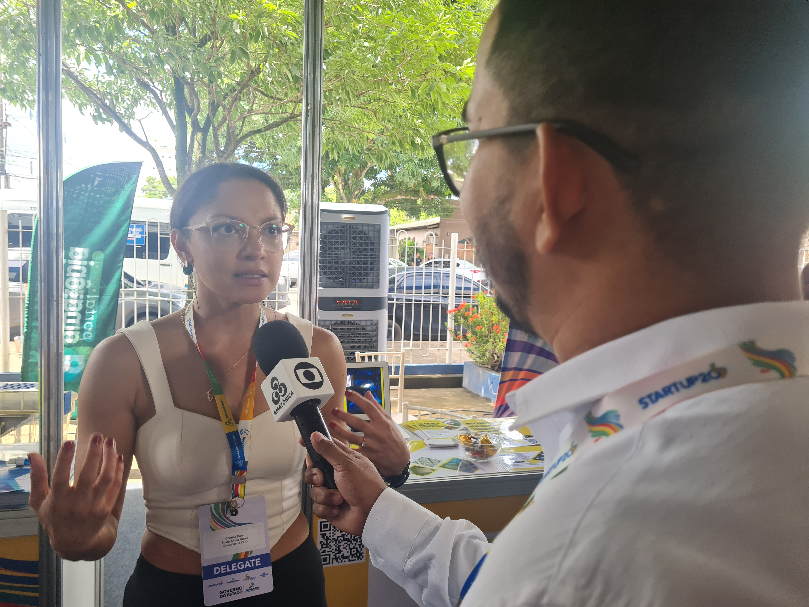
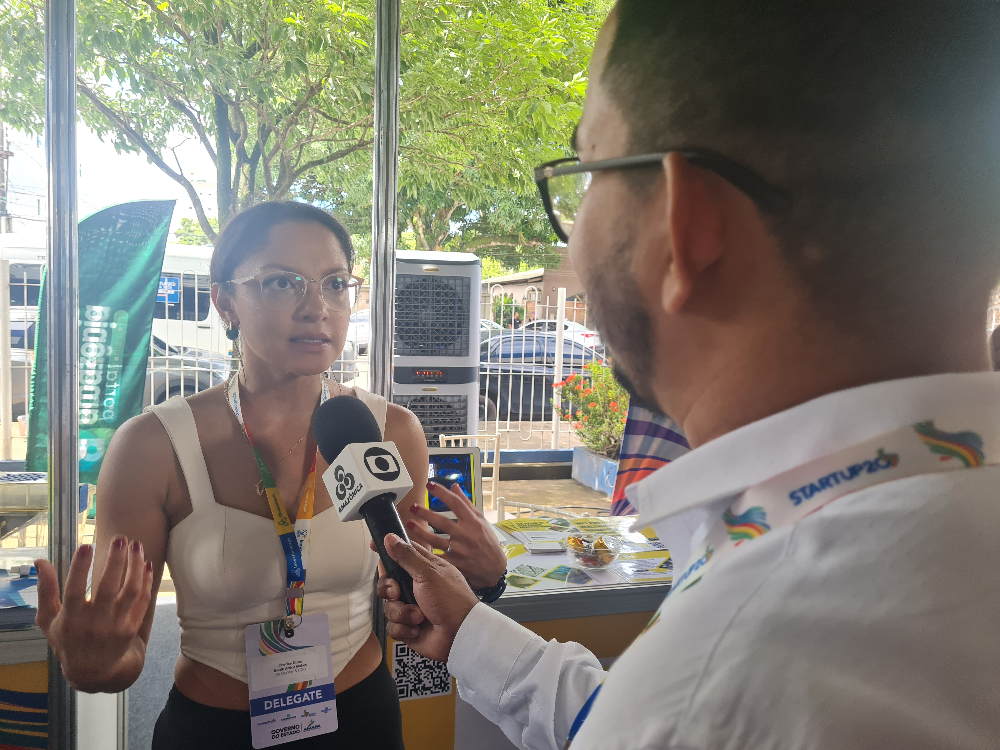

üéì Fellowships & Leadership
- MIT AI Venture Studio – Platinum Team Award
- Harvard T.H. Chan School of Public Health – Public Health Leadership Lab Fellow
- Chair of Operations, Harvard Graduate Student Council
- Director of External Partnerships, Harvard Chan Innovation & Technology Club
- Member, Harvard Student Wellbeing Council


 
